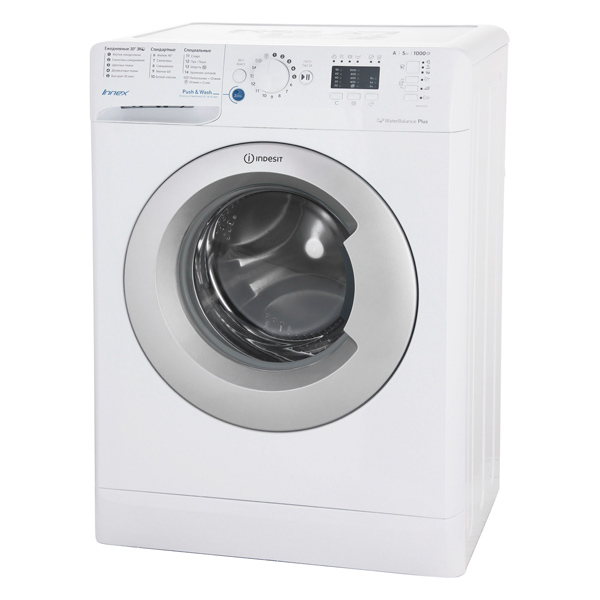

Узкая стиральная машина Indesit BWSA 51051 S

Цена - 14490 ₽
Характеристики товара
Максимальная загрузка - 5 кг
Мотор - стандартный
Макс. скорость отжима - 1000 об/мин
Защита от протечек - частичная
Оптимизация стирки - уменьшение времени
Минипрограмма - 30 мин
Расход воды за цикл - 44 л
Описание товара:
Стиральная машина Indesit BWSA 51051 S имеет множество программ, которые в точности соответствуют различным обстоятельствам. Пользователю доступен интенсивный и экономичный режим, ускоренный цикл с продолжительностью 30 минут, а также специальные функции для очистки деликатных тканей и цветного белья.
Подробное описание товара:
Устройство позволяет сократить длительность любой программы одним нажатием на кнопку – это помогает экономить время, не ухудшая качества полученного результата. При длительном использовании машины в её барабане накапливаются обрывки нитей и пух. Кроме того, частая стирка с низкой температурой может стать причиной размножения вредоносных бактерий. Справиться с этими проблемами просто – достаточно включить специальный режим очистки. Функция дополнительного полоскания будет особенно полезной для семей с детьми младшего возраста и людей, страдающих аллергиями – она помогает вымывать из ткани мельчайшие частицы пыли и пыльцы, а также остатки моющего средства. Система AntiOverFlow защищает бак устройства от переполнения, не допуская вытекания воды и затопления помещения.